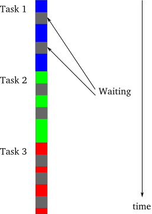
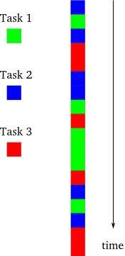
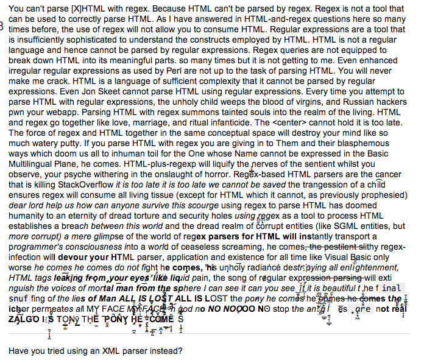
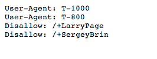

## What is it?
### Greek
- asyn => not with
- chronos => time
> not with time?
### Asynchronous I/O
- It is a programming paradigm for performing I/O operations so that the process that issued an I/O request is not blocked untill the data is available.
- After an I/O request is submitted, the process continues to execute the program and can later check the status of the submitted request.
> Asynchronous programming increases the task execution throughput where it minimizes time wasted for a blocking I/O operation.
Problem in Syncronous Execution

Asnychronous

Interleaved Execution
### Asynchronous Programming Advantages
- If there is a blocking operation for one task, you could execute others.
- It is more performant where you need to do a lot of I/O operations.
- Blocking operations do not matter as much.
### Advantages over Multithreading Programming
- In a Single Thread.
- Low overhead:
- Easy to share data.
- Easier to manage and control the processes in a single thread.
- No need for communication between threads.
- You have control all over the data, variables and whole namespace.
- Full control(instead of OS to decide which treads to be used) over the program.
### Global Interpreter Lock
- CPython interpreter uses GIL and only one thread could execute because of that.
- Due to GIL, the overhead Python pays for multithreading is quite large even if your machine has multiprocessors.
- The execution speed does not increase too much.
- You could run multiple interpreters to execute but then, the tasks need to be independent.
## Where do we stand in Python?
- Before Python 3.x, there is no good asynchronous module in the standard library.(`asyncore` and `asynchat`, both deprecated in Python 3.x)
- First Asynchronous Programming Effort targeted to Python 3.x: [Tulip](https://code.google.com/p/tulip/) (by Guido van Rossum)
- __Tulip__ became `asyncio` module starting from Python 3.4
- If you want to use it in Python 2.x, there is [Trollius](http://trollius.readthedocs.org/en/latest/index.html).(works on Python 3.x, too)
- We will use Python 3.4 as it is the __Future__. (We will come back to this later)
## Asyncio Module
- New in Python 3.4!
- Single-threaded concurrent code using coroutines
- Multiplexing I/O access over sockets and other resources
- Running network clients and servers
- Other asynronous execution related primitives
Asyncio
I'm not trying to reinvent the wheel. I'm trying to build a good one. Guido von Rossum
## Asyncio Module
- Concurrent Primitives
- Coroutines
- Event Loop
- Tasks
- Futures
- Transports
- Protocols
- and many more ...
### Event loop
- Pluggable. (works with Twisted, Gevent and others)
- Multiplexes I/O
- Optimizes the best method for I/O mechanism.
- Scheduler for __all__ of coroutines, tasks and Futures.
Reactor Pattern
 ```python
### Coroutines cannot be run outside of event loops
### They are the schedulers and also the place that coroutines exist
loop = asyncio.get_event_loop() # create a loop
f = asyncio.wait([inform(link_blob) for link_blob in links]) # List of corotine functions
loop.run_until_complete(f) # Run them
```
### Concurrent Primitives (Data Structures)
- Locks
- Semaphores
- Queues
### Locks
- Synchronization primitive.
- It has two states `locked` and `unlocked`.
- When it is locked, it cannot be used any coroutine.
- It could be considered as a _blocking_ mechanism towards the execution
of the tasks.
```python
### Coroutines cannot be run outside of event loops
### They are the schedulers and also the place that coroutines exist
loop = asyncio.get_event_loop() # create a loop
f = asyncio.wait([inform(link_blob) for link_blob in links]) # List of corotine functions
loop.run_until_complete(f) # Run them
```
### Concurrent Primitives (Data Structures)
- Locks
- Semaphores
- Queues
### Locks
- Synchronization primitive.
- It has two states `locked` and `unlocked`.
- When it is locked, it cannot be used any coroutine.
- It could be considered as a _blocking_ mechanism towards the execution
of the tasks.
Semaphore
 ### Semaphores
- Manages the shared resources through locks.
- It tracks the sources by counting the times that `acquire()` and
`release()` get called.
- If there are not sources available for `acquire()` call, it blocks the
execution.(like in a synchronous procedure)
- Very useful if you want to limit the coroutines that run at a single
time.
- We will revisit this concept in Responsive Web Scraping which is quite
important.
### Queues
- Manages the producer and consumer coroutines.
- If you have an application that depends on queue structure and want to
use them asynchronously, __queues__ are the things that you should
exploit.
- If you do not want to use coroutines, they also support `get_nowait()`
and `put_nowait()` functions to remove the asynchronous nature of
calls.
### Coroutines
- They need to have `yield from` in their function body.
- You need to also call in the form of `yield from awesome_coroutine()`.
- `awesome_coroutine()` returns only a generator even if it is properly decorated.
- For readability purposes, they should be decorated with `@asyncio.coroutine`. (it is not strictly enforced, though)
- To be able to know if something is coroutine function,
`asyncio.iscoroutinefunction()` is your friend.
- For coroutine objects, similarly `asyncio.iscoroutine()`.
> They are using `introspect` module under the hood.
```python
def i_am_not_a_coroutine():
ii = 0
while True:
sleep_time = 1.
ii += 1
if ii % 10 == 0:
print('I am not a coroutine :(')
time.sleep(sleep_time)
print('I slept {} seconds'.format(sleep_time))
if ii == 30:
break
start = time.perf_counter()
i_am_not_a_coroutine()
print('It has been {}'.format(time.perf_counter() - start))
```
```python
@asyncio.coroutine
def i_am_a_coroutine():
ii = 0
while True:
sleep_time = 1.
print('I slept {} seconds'.format(sleep_time))
ii += 1
if ii % 10 == 0:
print('I am a coroutine!')
yield from asyncio.sleep(sleep_time)
if ii == 30:
break
start = time.perf_counter()
new_loop = asyncio.get_event_loop()
f = asyncio.wait([i_am_a_coroutine() for _ in range(10)]) # Put 10 coroutines in a sequence
new_loop.run_until_complete(f) # Run
print('It has been {}'.format(time.perf_counter() - start))
```
### Web Scraping
- HTTP Library
- HTML Parser
### HTTP Library
- [urrlib](https://docs.python.org/2/library/urllib.html), [urrlib2](https://docs.python.org/2/library/urllib2.html) and their API is somehow broken in Python 2.
- New [`urllib`](https://docs.python.org/3/library/urllib.html) library is more sane in Python 3 and provides a more coherent namespace.
- Yet, its API is still not as good as [Requests](http://docs.python-requests.org/en/latest/)
> Requests and most of the HTTP libraries are synchronous.
> HTTP protocol is also synchronous, no surprise there
### Semaphores
- Manages the shared resources through locks.
- It tracks the sources by counting the times that `acquire()` and
`release()` get called.
- If there are not sources available for `acquire()` call, it blocks the
execution.(like in a synchronous procedure)
- Very useful if you want to limit the coroutines that run at a single
time.
- We will revisit this concept in Responsive Web Scraping which is quite
important.
### Queues
- Manages the producer and consumer coroutines.
- If you have an application that depends on queue structure and want to
use them asynchronously, __queues__ are the things that you should
exploit.
- If you do not want to use coroutines, they also support `get_nowait()`
and `put_nowait()` functions to remove the asynchronous nature of
calls.
### Coroutines
- They need to have `yield from` in their function body.
- You need to also call in the form of `yield from awesome_coroutine()`.
- `awesome_coroutine()` returns only a generator even if it is properly decorated.
- For readability purposes, they should be decorated with `@asyncio.coroutine`. (it is not strictly enforced, though)
- To be able to know if something is coroutine function,
`asyncio.iscoroutinefunction()` is your friend.
- For coroutine objects, similarly `asyncio.iscoroutine()`.
> They are using `introspect` module under the hood.
```python
def i_am_not_a_coroutine():
ii = 0
while True:
sleep_time = 1.
ii += 1
if ii % 10 == 0:
print('I am not a coroutine :(')
time.sleep(sleep_time)
print('I slept {} seconds'.format(sleep_time))
if ii == 30:
break
start = time.perf_counter()
i_am_not_a_coroutine()
print('It has been {}'.format(time.perf_counter() - start))
```
```python
@asyncio.coroutine
def i_am_a_coroutine():
ii = 0
while True:
sleep_time = 1.
print('I slept {} seconds'.format(sleep_time))
ii += 1
if ii % 10 == 0:
print('I am a coroutine!')
yield from asyncio.sleep(sleep_time)
if ii == 30:
break
start = time.perf_counter()
new_loop = asyncio.get_event_loop()
f = asyncio.wait([i_am_a_coroutine() for _ in range(10)]) # Put 10 coroutines in a sequence
new_loop.run_until_complete(f) # Run
print('It has been {}'.format(time.perf_counter() - start))
```
### Web Scraping
- HTTP Library
- HTML Parser
### HTTP Library
- [urrlib](https://docs.python.org/2/library/urllib.html), [urrlib2](https://docs.python.org/2/library/urllib2.html) and their API is somehow broken in Python 2.
- New [`urllib`](https://docs.python.org/3/library/urllib.html) library is more sane in Python 3 and provides a more coherent namespace.
- Yet, its API is still not as good as [Requests](http://docs.python-requests.org/en/latest/)
> Requests and most of the HTTP libraries are synchronous.
> HTTP protocol is also synchronous, no surprise there
HTML Parser
- Do not even attempt to use regex to parse HTML. (If you are not Chuck Norris)
One of the Most Famous Answers in SO

### HTML Parser
- There are tons of libraries in Python for parsing HTML(use one of these):
- [lxml](http://lxml.de/) => very fast
- [BeautifulSoup](http://en.wikipedia.org/wiki/Beautiful_Soup) => most adopted and used
- [PyQuery](https://pypi.python.org/pypi/pyquery) => on top of lxml, fast (I prefer this one)
- [Scrapy](http://scrapy.org/) => full featured
- [Mechanize](http://wwwsearch.sourceforge.net/mechanize/) => full featured(includes logins and forms)
- [HTML Parser](https://docs.python.org/3/library/html.parser.html) => barebone, not very good.
- But A for the effort putting in the standard library
```python
import requests
from pyquery import PyQuery as pq
schedule_url = 'http://pygotham.org/talks/schedule'
raw_html = requests.get(schedule_url).text
talks = []
for ii in pq(raw_html)('.slot-talk'):
title, _, presenter = str(ii.text_content()).strip().split('\n')
talks.append((title.strip(), presenter.strip().title()))
```
```python
# Talks - First 16
[('Python Apps and Docker', 'Matt Wright'),
('Insight into the anatomy of a huge Python project', 'Thomas Hatch'),
('Getting Rich with Comparison Methods', 'Matt Story'),
('Games with Pygame', 'Patrick Thunstrom'),
('Finding your "Teaching Stack": tools for teaching Python from beginners to experts',
'Elliott Hauser'),
('Customizable and SaaSy REST APIs', 'Juan Gutierrez'),
('Bend Postgres to Your Pythonic Will', 'Wes Chow'),
('High Technology for High Needs Students: A year of programming in the Bronx',
'Meg Winston Ray'),
('How I Taught a 10-year-old to Love Python and Programming', 'Eric Matzner'),
('TSAR (the TimeSeries AggregatoR), - how to count tens of billions of daily events in real time using open source technologies',
'Anirudh Todi'),
('Python Wats: Uncovering Odd Behavior', 'Amy Hanlon'),
('Python as uniting programming language across computer graphics packages and 3D automated manufacturing',
'Rainer Schmidt'),
('How I use Python to Fight human trafficking', 'Eric Schles'),
('Helping Python Play Chess', 'Jarret Petrillo'),
('Canonical sectors and evolutions of US stocks: an application of machine learning in Python',
'Ricky Chachra'),
('Sparkling Pandas - using Apache Spark to scale Pandas', 'Holden Karau'),]
```
### Single-Page Application (SPA)
- Content is retrieved via AJAX request when user lands on page.
- When you make a `GET` request via scraper, you do not necessarily get the content that an user sees.
- Do not despair!
- With Python, we have great tools to deal with this problem as well.
### Selenium and PhantomJS to rescue
- [Selenium](http://selenium-python.readthedocs.org/en/latest/index.html)
- [PhantomJS](http://phantomjs.org/)
- Install Selenium and PhantomJS
- Use the PhantomJS driver
```
# On Mac
## After installing brew and pip
brew update && brew install phantomjs
pip install selenium
```
```python
from selenium import webdriver
driver = webdriver.PhantomJS()
driver.get(SINGLE_PAGE_APPLICATION_URL)
# With content retrieved via AJAX!
raw_html = driver.page_source
driver.quit()
```
### Splinter
- Based on Selenium
- Nice, high level API
- Immature, [documentation](http://splinter.readthedocs.org/en/latest/) is OK, though.
```
pip install splinter
```
```python
from splinter import Browser
with Browser() as browser:
browser.visit(SINGLE_PAGE_APPLICATION_URL)
raw_html = browser.html
```
Responsive Web Scraping
- Do not open too many connections to same base url!
- Do not scrape if `robots.txt` disallows scraping.
- Do not crawl if they have an API.
- Crawl once, process multiple times. (Preferably offline)
- Avoid XML if you could.
- If you have to, there is a xmltodict (fast enough)
Google Killer Robots

### Semaphores for Responsive Web Scraping
- Use __Semaphores__ to limit the connection numbers or limit the resources.
(If we are crawling the same web server, use this one in order
not to damage and make the load of the server too much!)
```python
sem = asyncio.Semaphore(10) # Permit only 10 connections at a time
with (yield from sem):
page = yield from get_body(url)
```
instead of
```python
page = yield from get_body(url
```
### What next?
- Try to think the problems in an asynchronous manner.
- Try to use `asyncio` in your next project which depends on I/O.
- Use Python 3, it breaks incompatibility, but it is simply __better__. (at least your side projects)
- Try to learn more advanced and low-level `asyncio` primitives; transports and protocols.
> Syncronous is not cool... You know what is cool? __Asynchronous__.
### Materials on Coroutine
- [Coroutines by David Beazley](http://www.dabeaz.com/coroutines/) (For core concepts, it is good start, outdated ~2008 though)
- [Difference between `yield` and `yield from` by Guido van Rossum](https://groups.google.com/forum/#!msg/python-tulip/bmphRrryuFk/aB45sEJUomYJ)
-
### Third Party Scraping Sources
- [Yahoo Query Language](https://developer.yahoo.com/yql/)
- [import.io](https://import.io/)
- [Kimono Labs](https://www.kimonolabs.com/)
- [ScraperWiki](https://scraperwiki.com/)
### Other Useful Libraries
- [Pattern](http://www.clips.ua.ac.be/pages/pattern)
- [Bixo](http://bixo.101tec.com/)
- [Upton in Ruby](https://github.com/propublica/upton)
- [Mechanize in Ruby](https://github.com/sparklemotion/mechanize)
- [Portia - Visual Scraping](https://github.com/scrapinghub/portia)
### Credits
- http://krondo.com/?p=1209
- (Most of images are from here, article is well-written, I "borrowed" couple of things here and there)
-
- For notebooks and code: Open an issue in => # Give Github repository link
- For everything else, do not hesitate to contact me:
bugra@nyu.edu
Thanks!